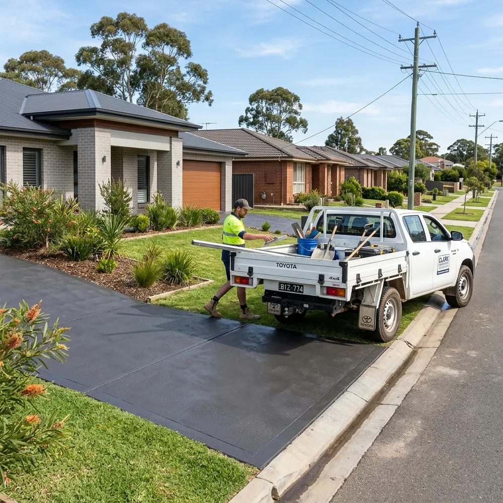

Ormeau Concreting Contractors — Exposed Aggregate Driveways, Shed Slabs & Crossovers (4208)
Need a local concreter in Ormeau? We pour highly durable concrete driveways, exposed aggregate pool decks, stencilled pathways, and engineered house slabs. Complying strictly with QBCC and Australian Standards (AS 3600).
Request a Free Quote
Fill out the form below and our local Ormeau team will contact you for a site measurement shortly.
⚡ Quick Answer: Ormeau Concreting — What You Need to Know
- Local Ground Conditions: Ormeau (4208) sits on reactive clay-loam and engineered fill — requiring SL82 mesh on bar chairs and AS 2870-compliant base compaction to prevent slab cracking.
- Driveway Finishes: Exposed aggregate is the #1 choice in Ormeau Hills for slip resistance on slopes; covercrete resurfacing restores existing slabs without demolition.
- Council Crossovers: All new vehicle crossovers in Ormeau require a GCCC VXO permit — we handle drawings, application & inspections.
- Concrete Grades: We pour N32 (32 MPa) concrete with SL82 reinforcement for driveways and N25 for standard shed slabs, complying with AS 3600.
- QBCC Licensed: All work carried out under QBCC Licence #1524819, fully insured for residential and commercial concreting in Queensland.
Our Concreting Services in Ormeau

Ormeau Driveways & Crossovers
Plain concrete, color oxide driveways, or custom stencils. We construct crossovers matching the City of Gold Coast standard drawings for vehicle crossings in Ormeau.
Get a Quote →
Exposed Aggregate Finishes
A premium, slip-resistant concrete finish created by washing back the cement surface to reveal natural stone aggregate — a popular choice for residential driveways and pool surrounds throughout Ormeau and Ormeau Hills. We offer a range of pebble colours and blend sizes suited to the architectural styles common in northern Gold Coast estates. Sealed with UV-resistant acrylic for long-term durability.
View Exposed Aggregate Guide →
Concrete Resurfacing (Covercrete)
Upgrade your existing driveway. Our spray-on concrete resurfacing adds texture and strength to old concrete using custom patterns and weather-resistant sealers.
Get a Quote →
Slabs, Pads & Pathways
Precision formwork and steel reinforcing for house slabs, extensions, patio expansions, and durable concrete garden paths around your property.
Get a Quote →Ormeau Engineering & Pour Specifications
Ormeau Hills N32 Concrete Grade
Engineered N32 (32MPa) concrete mix designed to support steep family driveways and 4WD access tracks in Ormeau Hills.
Heavy SL82 Steel Reinforcement
Reinforcing SL82 mesh raised on 50mm plastic bar chairs prevents surface cracking in Ormeau Ridge reactive clay subsoils.
50mm-100mm Roadbase Compaction
We excavate organic topsoil, compact the subgrade, and lay a solid roadbase sub-base under all driveways and shed slabs.
Thermal & Wall Expansion Joints
Saw-cut control joints manage heat expansion while isolation joints protect house brickwork from slab movement.
Our Concreting Process: Excavation to Sealing
Excavation & Base Prep
We excavate to the required depth, remove grass and roots, compact the subgrade using a mechanical plate compactor, and lay a compacted roadbase or crusher dust foundation.
Formwork & Steel Laying
We set up straight timber formwork to define the slab edges, lay plastic moisture underlay if required, and position SL72 reinforcement mesh on plastic support chairs.
Concrete Pouring & Finishing
We pour concrete (using line pumps if required), level with a screed bar, and apply the final finish—whether it's heavy broom (for crossovers), exposed aggregate wash, or stenciling.
Cutting & Sealing
We cut concrete control joints to manage expansion stress and apply two coats of UV-stable solvent acrylic concrete sealer to protect the slab from dirt and stains.
Decorative Concrete & Resurfacing — Ormeau
Covercrete Driveway Resurfacing
If your existing driveway slab is sound but cracked, stained, or faded, covercrete driveway resurfacing can restore it without a full demolition. A polymer-modified cement overlay is spray-applied over the prepared surface, providing a fresh textured finish in a range of colours. This is a popular option for Ormeau homeowners looking to refresh older driveways cost-effectively.
Stencil & Architectural Concrete
Stencil concrete and architectural concrete finishes are available for driveways, pool surrounds, and entertaining areas across Ormeau. Patterns include cobblestone, slate tile, and geometric designs applied using mineral oxide hardeners and stencil mats. If you have seen a distinctive decorative concrete finish in your area and want something similar, bring us a photo and we can advise on the closest match.
Recent Concreting Projects & Finishes
Exposed Aggregate
Premium Exposed Aggregate Pour
High-density N32 concrete with natural QLD river pebbles and salt-and-pepper aggregate finish.
Covercrete Resurfacing
Decorative Spray-On Resurfacing
Polymer-modified Covercrete restoration with custom slate tile border and UV acrylic sealer.

On-Site TeamLicensed QBCC Team On-Site
Fully equipped mobile concreting rig serving northern Gold Coast residential properties.
What Ormeau Homeowners Say
"Exposed aggregate driveway and patio extension poured in Ormeau Hills. Clean work, fair price, and fast turnaround."
Michelle P.
Verified Homeowner, Ormeau Hills"Built a heavy-duty slab for my 9x6m machinery shed in Norfolk estate. Solid steel mesh reinforcement and level finish."
Darren K.
Property Owner, OrmeauWhy Ormeau Homeowners Choose Gold Coast Concreters QLD
Ormeau (4208) is one of the fastest-growing residential corridors on the Northern Gold Coast, with thriving master-planned communities continuing to expand across Ormeau Ridge and Ormeau Woods. Most properties here sit on a mix of clay-loam subsoils and engineered fill, which means driveways, shed slabs, and patio extensions require meticulous base preparation to prevent cracking or settlement over time. As QBCC-licensed concrete contractors working weekly throughout Ormeau, we understand local ground conditions, City of Gold Coast crossover standards, and the subtropical Queensland weather that dictates concrete curing rates — ensuring every slab is structurally engineered to endure for decades.
Ground & Soil Dynamics in Ormeau
Much of Ormeau, particularly around established streets near Upper Ormeau Road, rests on reactive clay-loam soil that expands and contracts with seasonal rainfall. In newer estate developments like Ormeau Ridge, engineered fill soil is common. For both ground types, we excavate to solid subgrade, lay a 50mm compacted roadbase foundation, and install SL82 steel reinforcement mesh on bar chairs. This structural approach complies with AS 2870 (Residential Slabs & Footings) to prevent slab cracking during heavy summer downpours.
Ormeau Project Scope & Case Study
We recently designed a project scope for a 45m² exposed aggregate driveway replacement for a home in Ormeau Woods near Ormeau State School. The job involved removing a 15-year-old cracked plain slab, excavating 150mm, installing plastic moisture barriers, placing SL82 steel mesh, pouring N32 grade concrete with Gold Coast pebbles, and applying two coats of UV-stable solvent sealer — completed start-to-finish in just 3 days.
Exposed Aggregate Driveways in Ormeau Hills
Ormeau Hills properties typically feature wider blocks, sloped sites, and longer driveway runs than the flat estate lots closer to the highway. Exposed aggregate concrete is particularly well-suited to these elevated properties — the textured pebble surface provides natural grip on sloped driveways, and the natural stone tones complement the semi-rural character of the area. We pour N32 concrete with SL82 mesh and UV-stable acrylic sealer, ensuring the finish performs through years of Queensland heat and summer storms.
Areas & Pockets We Service Around Ormeau (4208)
- • Ormeau Ridge: A modern residential estate roughly 5 minutes from Ormeau Town Centre, featuring contemporary family homes on standard allotments — ideal for decorative exposed aggregate driveways, honed pool surrounds, and alfresco patio slabs.
- • Ormeau Woods: An established, leafy pocket surrounding Ormeau Woods State High School with spacious family blocks, frequently requiring complete driveway resurfacing, covercrete restoration, or side-access boat slabs.
- • Ormeau Hills: A scenic semi-rural fringe featuring elevated, sloped acreage-style properties where extended reinforced driveways, retaining wall footings, and machinery shed slabs are standard requirements.
Concreting Service Areas in Northern Gold Coast
Serving homeowners across Ormeau, Ormeau Hills, and Norfolk estate with quality driveways and shed bases. Visit our Gold Coast Concreters Main Hub or read about Exposed Aggregate Driveways, Covercrete Resurfacing, Machinery Shed Slabs, and Crossover Approvals.
Trade Estimator Note — Gold Coast Concreters QLD (QBCC #1524819)
"Ormeau and Ormeau Hills are two of the most consistent markets on the Northern Gold Coast. Ormeau Ridge estate properties typically want exposed aggregate driveways (30–55 m²) while acreage owners in Ormeau Hills more commonly require shed slab pours (9×6 m to 12×9 m) with heavy SL82 mesh. We carry sample boards of aggregate colours to every quote so homeowners can choose their finish on-site before committing to a price. Our quotes include all base prep, steel, pour, finish, cutting, sealing, and council crossover compliance — no hidden extras."
— Gold Coast Concreters Trade Estimators | QBCC Licence #1524819 | Serving Ormeau since 2019
Frequently Asked Questions - Ormeau Concreting
Q: How much does a driveway cost in Ormeau?
A: Concreting costs depend on several factors — driveway size, chosen finish (plain, exposed aggregate, or covercrete resurfacing), site access, and excavation requirements. Every property is different, so we don't provide fixed online pricing. Call us on 0411 914 157 or fill out our quick quote form above for a free, accurate, no-obligation quote based on your specific site.
Q: Do I need a Gold Coast City Council permit for a driveway crossover in Ormeau?
A: Yes. Any new or modified vehicle crossover extending across public road reserves in Ormeau requires a Vehicular Crossing (VXO) permit from the City of Gold Coast. Our team manages site drawings, council applications, and pre-pour inspections for you.
Q: How long does concrete take to cure in Ormeau's humid climate?
A: Concrete reaches initial walking strength within 24-48 hours and full structural design strength around 28 days. Subtropical Gold Coast humidity can alter surface moisture evaporation, which is why we apply curing compounds and closely monitor pour conditions.
Q: What suburbs near Ormeau do you service?
A: In addition to Ormeau Ridge, Ormeau Woods, and Ormeau Hills, we service nearby Pimpama (4209), Coomera (4209), Yatala (4207), Kingsholme (4208), Willow Vale (4209), and Helensvale (4212).
Q: What is the best concrete finish for an Ormeau Hills driveway?
A: Exposed aggregate is the most popular choice for Ormeau Hills driveways because the textured pebble surface provides natural grip on sloped access, and the stone tones age well in outdoor conditions. Plain broom-finish concrete is a cost-effective alternative for flat sites or rear shed slabs. We can bring a sample board to your property so you can compare finishes before committing to a quote.
Q: Do you do concrete resurfacing and driveway repainting in Ormeau?
A: Yes. We offer covercrete spray-on resurfacing for existing concrete driveways, which provides a fresh surface and new colour without demolishing the existing slab. This is different from paint — it is a cement-based overlay that bonds to concrete and lasts significantly longer than surface-applied coatings. For a free assessment of your existing driveway, call us on 0411 914 157.
Our Partners
and construction commission
LTD
COLOUR
SYSTEMS